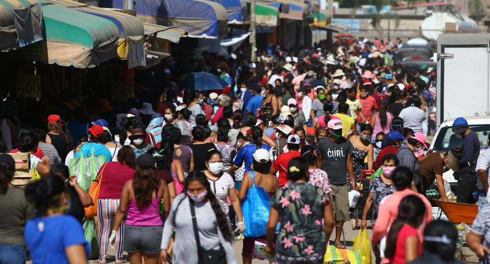

INOCUIDAD DEL MANEJO DE LOS ALIMENTOS DURANTE LA PANDEMIA
ARTICULOS
MAS RECIENTES
SINTOMAS
Friebre
Tos seca
Diarrea
Falta de oxigeno
Origen del COVID-19
Covid-19 tuvo su origen en la ciudad de Wuhan, en China. A mediados del mes de diciembre de 2019, las autoridades sanitarias de Wuhan detectaron una serie de casos de neumonía producida por una causa desconocida.En ese momento se originó una alarma sobre una nueva enfermedad desconocida hasta el momento. Tres meses después se han producido más de 150.000 casos y cerca de 6.000 muertos en todo el mundo, según los datos del Centro Europeo para el Control de Enfermedades (ECDC, por sus siglas en inglés).
Una primera investigación posterior sobre el origen de esta enfermedad, publicada en la revista The Lancet, determinó que se trataba de un nuevo tipo de virus, de la familia Coronavidae, emparentado con el Síndrome Respiratorio Agudo Severo (SARS) y con el Síndrome Respiratorio de Oriente Medio (MERS) pero que no es igual a ninguno de ellos.
Para averiguarlo estudiaron 10 muestras genéticas tomadas de pacientes procedentes de Wuhan que incluía ocho genomas completos y dos genomas parciales.
Medidas de prevenciòn
Lugares posibles de contagio

Mensaje para todos <3
Quedate en tu casa aprovecha el tiempo que tienes con tu familia, procura lavar bien tus alimentos ya que otras personas no tienen alimento, ni familia, viven de bajo de un puente, en la calle, ellos tienen mas posbilidades de contagiarse ya que estan bajos de defensas,en cambio tu puedes evitar mas contagios quedandote en casa y desinfectando tus alimentos.